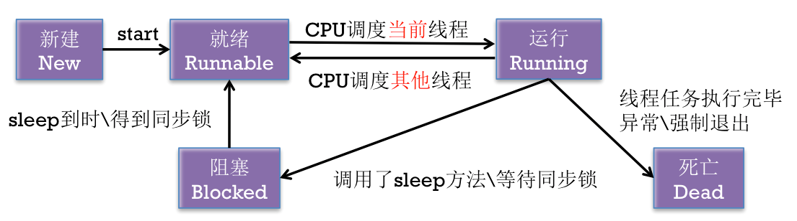
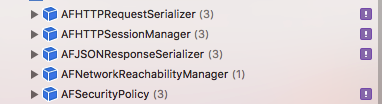

多线程-基本概念和原理
进程
- 在操作系统中正在运行的一个应用程序
- 每个进程之间是独立的，每个进程均运行在其专用且受保护的内存空间内
线程
- 1个进程要想执行任务，必须得有线程
- 每1个进程至少要有1条线程
- 一个进程（程序）的所有任务都在线程中执行
- 线程的串行
- 1个线程中任务的执行是串行的
- 如果要在1个线程中执行多个任务，那么只能一个一个地按顺序执行这些任务
- 在同一时间内，1个线程只能执行1个任务
- 也可以认为线程是进程中的1条执行路径
线程的状态

进程和线程的比较
- 线程是CPU调用(执行任务)的最小单位
- 进程是CPU分配资源和调度的单位
- 一个程序可以对应多个进程，一个进程中可以有多个线程，但至少要有一个线程
- 同一个进程内的线程共享进程的资源
多线程
- 1个进程中可以开启多条线程，每条线程可以并行（同时）执行不同的任务
-
比喻
- 进程 : 车间
- 线程 : 车间工人
-
多线程技术可以提高程序的执行效率, 比如: 同时开启3条线程分别下载3个文件
多线程的原理
- 同一时间，CPU只能处理1条线程，只有1条线程在工作（执行）
- 多线程并发（同时）执行，其实是CPU快速地在多条线程之间调度 …
一款基于 AFNetworking 封装的网络框架
AFNetworking 存在的问题
如果你的项目中使用了 AFNetworking, 就一定会出现内存泄漏的问题. 这个是我在用做测试的时候发现的.
问题重现
- 安装 AFNetworking, 使用 AFNetworking 做网络请求
- 使用 Debug Memory Graph 查看内存引用关系
Debug Memory Graph(Xcode 8.0+)

AFNetworing 的一些对象被 Xcode 标记

图上结果表示: 这些对象无法被释放, 即内存泄漏.
- 使用 Instrument 测试得到类似结果
解决问题
失败的解决办法
- 控制器退出时, 取消所有任务
- 使用 weak strong dance
- ...
成功的解决办法 …
read moreUITableView 的性能优化
重要性
UITableView 是 iOS 开发中最常使用的控件之一, 在各类 App 中都充斥着各种表格. 表格展示的内容如果比较多, 比较复杂, 往往会影响界面的刷新帧率, 在用户的角度就是界面卡顿, 这时必须对 UITableView 进行性能优化.
表格为什么会卡?
iOS 设备的刷新帧率为 60Hz, 也就是一秒钟会有 60 帧图片绘制在屏幕上. 如果在下一帧图片绘制的时候, CPU正忙, 那么这一帧就会被跳过, 频繁出现这种情况, 界面就卡了. 总结: 在两帧之间运算没有做完, 就会出现跳帧
优化方向
实施优化的准则: 测量(主要是使用Instrument看帧率), 而不是猜测
关于计算
- 尽量少计算, 所有需要的素材提前计算好!
关于圆角
- 控件上不要设置圆角半径, 所有图像渲染的属性, 都要注意!
关于创建控件
- 不要动态创建控件, 所有需要的控件, 都要提前创建好, 在显示的时候, 根据数据决定显示 / 隐藏
关于控件数量 …
read more聊聊 iOS 的 MVC 架构
内容提要
这篇博文, 聊的是软件架构, 主要是 iOS 中的 MVC 架构.
架构基础
架构的目的
- 解耦.
- 类之间, 模块之间, 要交互, 就会有耦合. 我们的目标就是将耦合降到最低
- 问题来了, 为什么要解耦呢? 解耦后的好处是什么? 个人总结两点: 1. 方便类和模块的重用; 2. 清晰化类之间、模块之间的逻辑关系, 便于维护、扩展
一些基本设计模式
在理解 MVC 这个复合设计模式之前, 有必要对下面的这些基本设计模式有一定的理解.
- 代理(Delegate)
- 通知(Notification)
- 键值观察(KVO)
- 目标动作(Target-Action)
- ...
MVC
M : Model, 模型. 存放数据 V : View, 视图. 用户所见, 能给与用户进行交互 …
read morenullable&nonnull
直面问题
Swift 中有 optional 和 non-optional. 在 Objective-C 中没有这一概念. 那么在 Swift 和 Objective-C 混合编程的时候, 编译器会统一使用 non-optional 处理, 这样处理往往并不是我们想要的结果.
苹果的解决方案
引入三对关键字
- __nullable 和 __nonnull
- _Nonnull 和 _Nullable
- nonnull 和 nullable
- nonnull: 对象不应该为空
- nullable: 对象可以是 NULL 或 nil
- 三种写法本质上都是互通的，只是放的位置不同
使用总结
- nonnull 和 nullable: 属性、方法返回值、方法参数
- _Nonnull 和 _Nullable: C 函数的参数 …
iOS 开发中的各种尺寸
iPhone系列屏幕大小
| 2G, 3G, 3GS | 4, 4s | 5, 5s | 6, 6s | 6 Plus 6s Plus |
|---|---|---|---|---|
| 320 x 480 | 320 x 480 | 320 x 568 | 375 x 667 | 414x736 |
| 1x | 2x | 2x | 2x | 3x |
App Icon
| Device or context | Icon size | | :-: | :-: | :-: | | iPhone 6s Plus, iPhone 6 Plus | 180px by 180px | | iPhone 6s …
read moreBlock 总结
基本概念
- Block 即
带有自动变量(局部变量)的匿名函数 - Block
提供了类似由 C++ 和 Objective-C 类生成实例或对象来保持变量值的能力 - Block 其实就是一个
代码块，把你想要执行的代码封装在这个代码块里，等到需要的时候再去调用 - Block 是
OC 对象. OC 对象? 好像不对? Block 不是函数指针吗? 如果 Block 是函数指针, 那么还有必要把 Block 从栈区拷贝到堆区吗? 还能使用 copy 关键字修饰 Block 属性吗? 用事实说话好吧!
// 通过使用 OC 运行时机制, 打印出 全局 Block 的继承链
- (void …